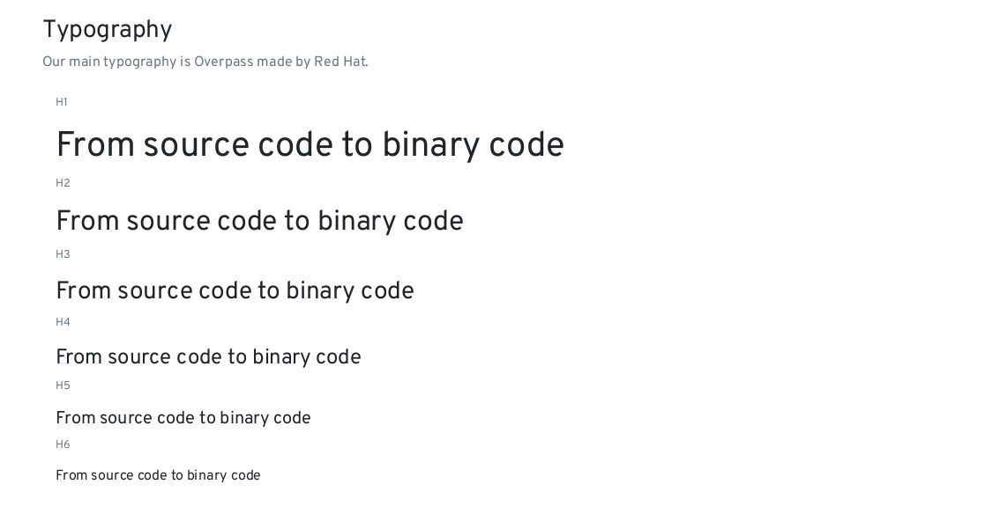
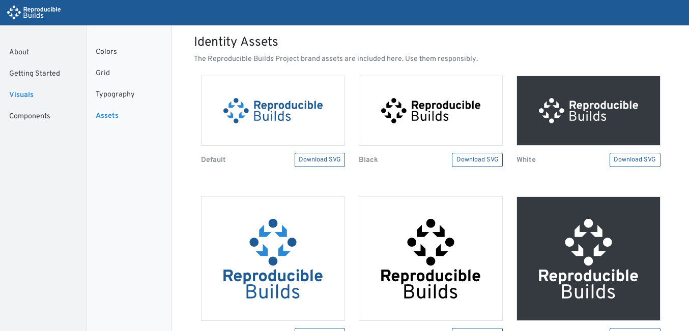
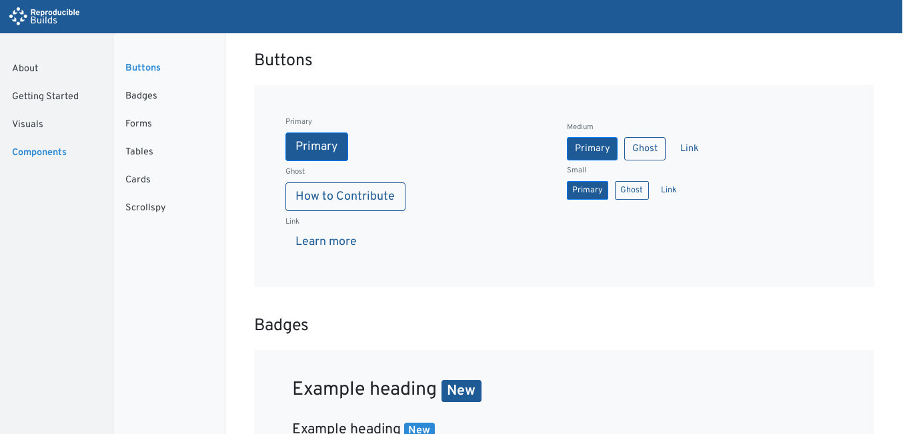
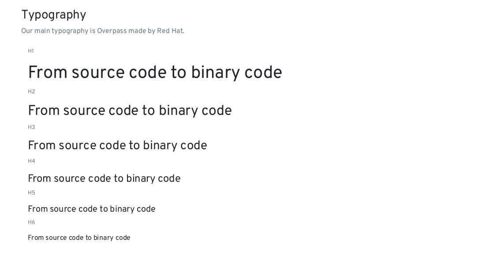
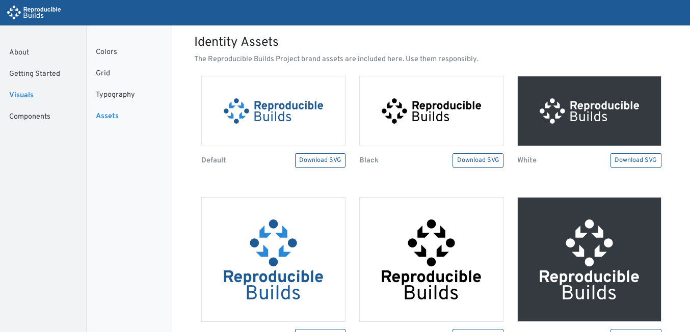
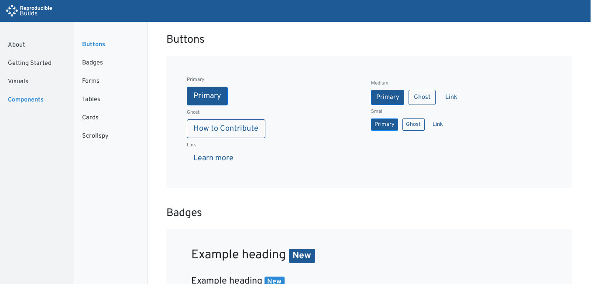

Reproducible Builds has been the first project we supported as part of the Usability Lab. Reproducible Builds represents a set of software development practices that create an independently-verifiable path from source code to the binary code used by computers.
We have been in talks with the Reproducible Builds community since late 2017 where they were looking to have a new logo to represent the project. Going a step further, we also decided to work on a fully fledged live style guide. The style guide itself works with JavaScript disabled / Tor High Security mode and is free of any 3rd party components.
Date
May, 2018
Clients
Category
Styleguide
Sources
 Identihub
IdentihubWebsite